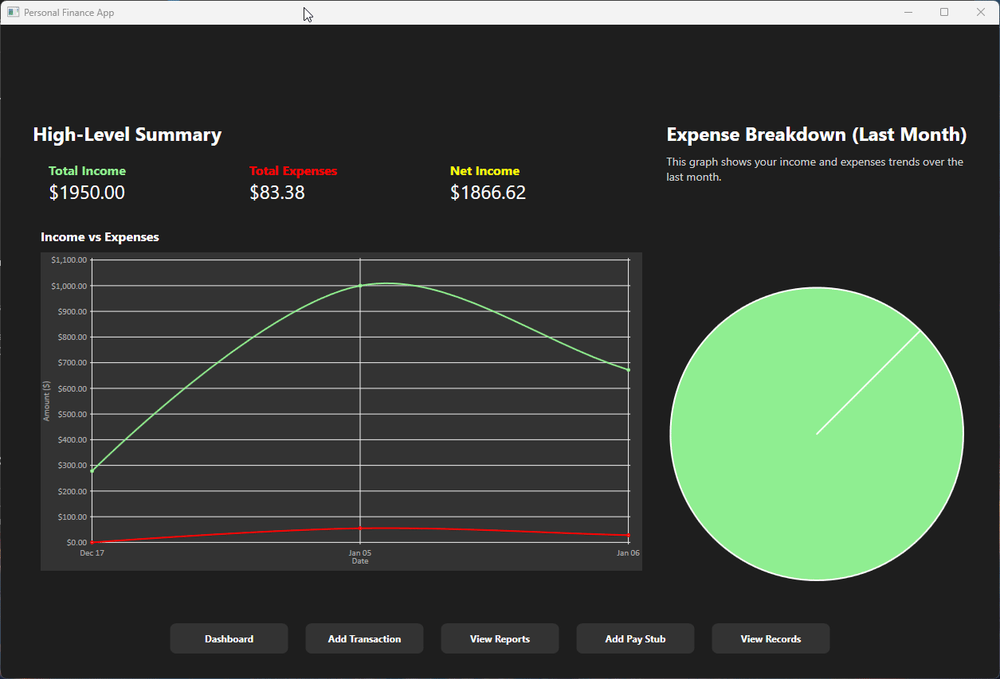
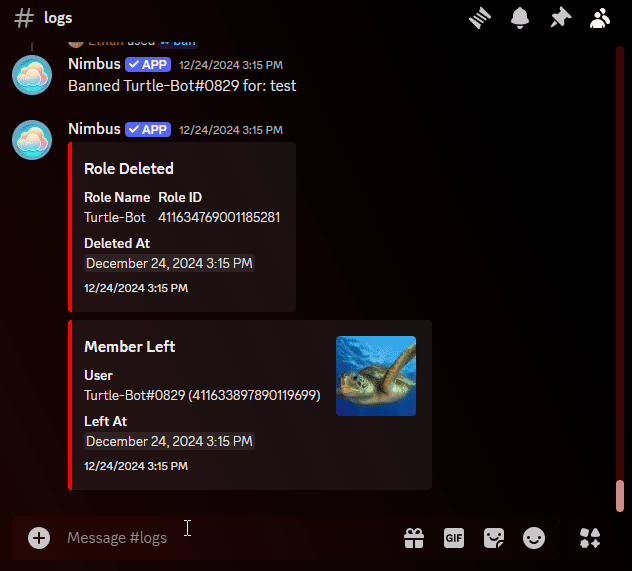
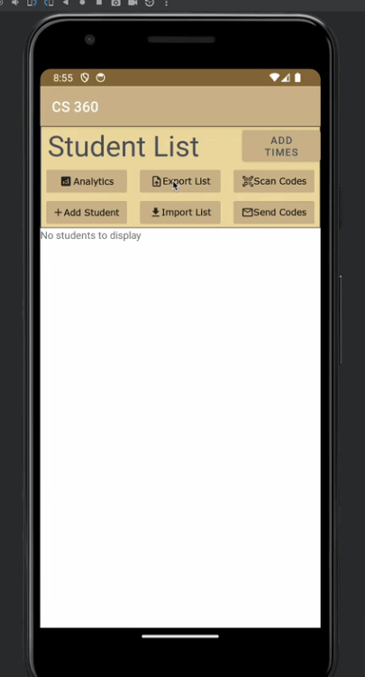
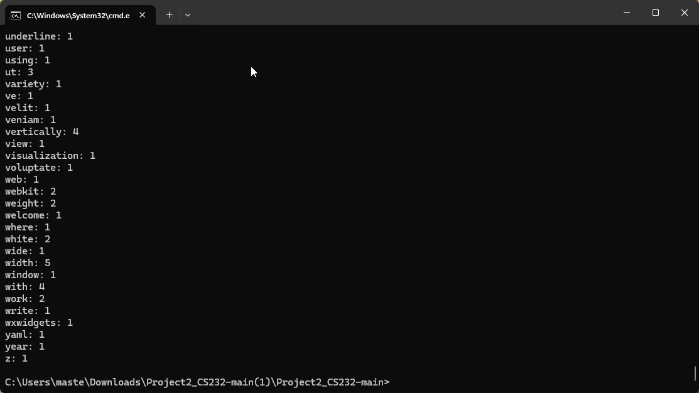
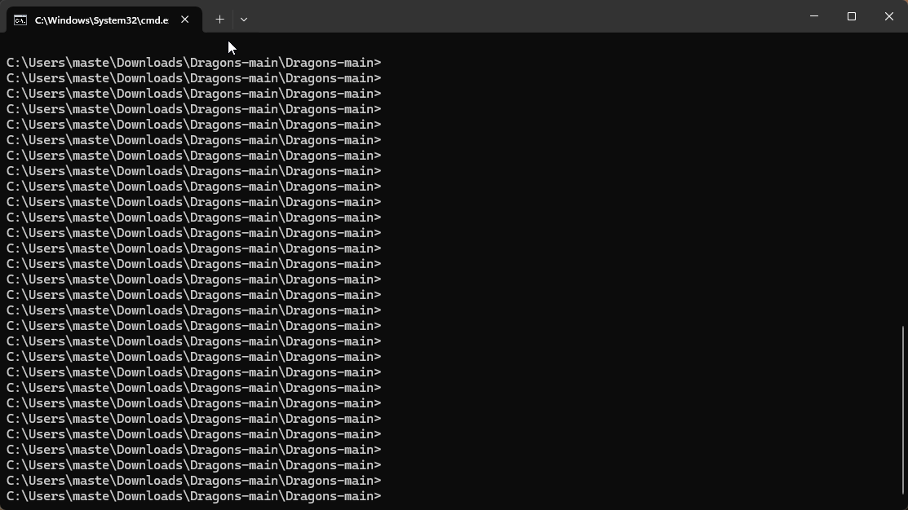

Languages
Building blocks I use across projects
Software engineer · Full-stack development
I build thoughtful interfaces, reliable backend services, and data-driven features with React, TypeScript, and Node.js.
 Software Engineer
Software Engineer
A little about me
Hi, I’m Ethan Passino—a software engineer focused on practical full-stack applications, thoughtful user experiences, and reliable systems.
With over a year of professional experience, I’ve worked across React, TypeScript, Node.js, data migrations, backend services, and automated testing. I enjoy taking an ambiguous problem and turning it into a clear workflow that people can use with confidence.
How I build
A practical toolkit for building interfaces, services, and data-driven workflows from end to end.
Building blocks I use across projects
Frameworks for user-facing software
Making systems dependable and easier to evolve
Keeping work organized from idea to release
 Programming Languages
Programming Languages
I’m proficient in TypeScript, JavaScript, C++, C#, Python, Java, HTML, CSS, SQL, JSON, and YAML. I use these languages across full-stack applications, desktop software, and backend systems.
 Project Management
Project Management
I have experience using tools like GitHub, Jira, Trello, Microsoft Teams, and Discord to manage projects, track issues, and collaborate effectively in team environments.
 Framework & Tool Experience
Framework & Tool Experience
I’ve worked with React, Node.js, Express, Docker, MongoDB, wxWidgets, JavaFX, WPF, and Mongoose to build full-stack web apps and desktop software.
 Coding Methodologies
Coding Methodologies
I employ clean code principles, write meaningful comments, and practice test-driven development for maintainable and reliable software.
 Focus Areas
Focus Areas
I’m interested in full-stack development, systems programming, UI/UX, and automation.
A snapshot of the roles where I have built software, improved workflows, and developed leadership experience.
Enterprise software development
Restaurant operations
Fort Wayne, IN · 2025–Present
Restaurant Operations
Fort Wayne, IN · May 2022 – July 2025
Timeline: Dec 2024 - Current
The Personal Finance App is a C# desktop application designed to help users take control of their financial goals. It features robust tools for budgeting, tracking expenses, and generating detailed reports. With an intuitive interface, the app provides insights into spending habits and helps users make informed decisions about their finances.

Timeline: Jan 2025 - Feb 2025
NodeChat is a real-time web-based chat app built with Node.js, React, and MongoDB. It offers secure messaging, a modern UI, and smooth user interactions through WebSocket technology.
Timeline: Jan 2021 - Jan 2024
BrickThrower is a Minecraft plugin that lets players throw bricks with a right-click, adding a fun combat and gameplay mechanic. The plugin supports Minecraft versions from 1.8 to 1.20.4, with customizable options for damage and velocity.

Timeline: August 2024 - Dec 2024
TaskFlow is a gamified project management app designed to help teams organize tasks, track progress, and stay motivated. Built with React, TypeScript, and Node.js, it features task management, real-time updates, and a drag-and-drop interface.
Timeline: Nov 2024 - Current
Nimbus Bot is a powerful and customizable Discord bot designed to enhance server management and user engagement. It includes robust moderation tools, a music player, a dynamic leveling system, and customizable server analytics.

Timeline: August 2023 - Dec 2023
Attendance Tracker System is an Android-based app designed to streamline attendance management for educational institutions. Built with Java, it features QR code-based check-ins, detailed analytics, and automated email notifications.

Timeline: January 2025
SmartLetter is a user-friendly desktop application that simplifies the job application process by generating high-quality, personalized cover letters powered by AI. With features like customizable tone, resume integration, real-time generation, and save options, SmartLetter makes it easy to craft professional letters tailored to any job role.

Timeline: Jan 2022 - May 2022
Web Crawler is a system that efficiently traverses websites, extracting and organizing data into a Trie structure for rapid lookups. Developed in C with Python scripts, the crawler demonstrates effective use of algorithms and data structures for large-scale information retrieval.

Timeline: August 2021 - Sept 2021
CommandAlias is a lightweight Minecraft BungeeCord plugin that simplifies server commands with custom aliases. Administrators can easily define alternative commands and reload changes instantly without restarting the server.

Timeline: Feb 2022 - March 2022
PrefixRequest is a Minecraft plugin that streamlines custom prefix management. With an intuitive GUI, players can request personalized prefixes, and administrators can easily approve or deny them.

Timeline: Dec 2020 - Feb 2021
Dragons is a Python-based text adventure game where players engage in battles with mythical dragons, complete quests, and achieve milestones. The game features configurable elements such as custom dragons, moves, and storylines.

Let's connect
I'm always interested in thoughtful software, useful products, and conversations about building better systems.
Whether you want to discuss a software opportunity, collaborate on a project, or talk through an idea, send a message and I'll get back to you.